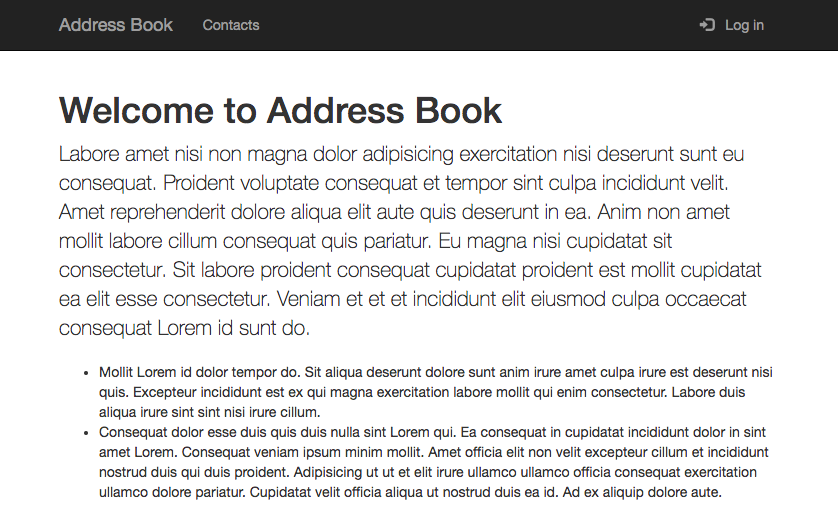
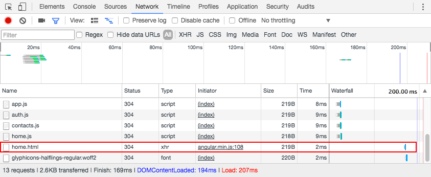
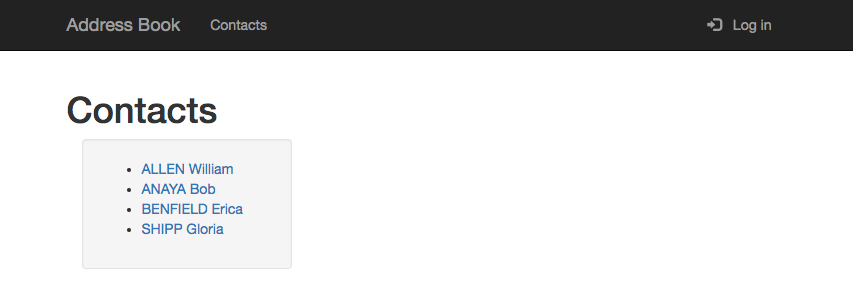
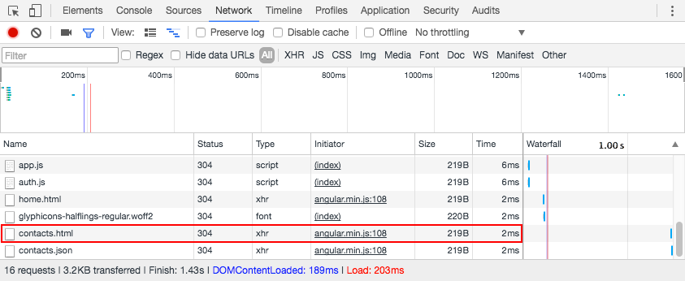

# Angular UI Router State-based routing for Angular applications. This material is part of the [Advanced Front-end Development](https://github.com/MediaComem/comem-masrad-dfa) for the [Master of Advances Studies in Rapid Application Development](https://www.he-arc.ch/ingenierie/mas-rad-cas-dar). **You will need** * [live-server][live-server] * [Google Chrome][chrome] (recommended, any browser with developer tools will do) **Recommended reading** * [Angular](../angular/) --- class: center, middle, image-header ## What is UI Router? .breadcrumbs[<a href="#1">Angular UI Router</a>] <p class='center'></p> Angular has a built-in router, [ngRoute][angular-router], but it's not very flexible. [Angular UI router][angular-ui-router] is a community-developed alternative which is much more popular (and powerful). --- ### Getting started .breadcrumbs[<a href="#1">Angular UI Router</a> > <a href="#2">What is UI Router?</a>] Clone or copy this repository: https://github.com/MediaComem/comem-webdev-angular-ui-router-demo You will use it to implement routing with Angular UI router in this tutorial. If you serve the directory with [live-server][live-server], you should see the following blank page with a navbar: <p class='center'></p> You will implement the following: * A home page accessible by clicking "Address Book" * A contacts page giving you access to the list of contacts and the details of each contact * Access control: the contacts page should only be accessible when logged in --- ### Adding UI router to your Angular app .breadcrumbs[<a href="#1">Angular UI Router</a> > <a href="#2">What is UI Router?</a>] Angular UI router is a third-party library: it is not included out of the box in Angular. Luckily, the starter project already includes it for you: ```html <script type="text/javascript" src="assets/js/angular-ui-router.min.js"></script> ``` Angular UI router provides an **Angular module** called `ui.router`. To use it, you need to add that module as a dependency when declaring your application module (in `js/app.js`): ```js angular.module('AddressBook', [ 'angular-storage'`,` `'ui.router'` ]); ``` You now have access to Angular UI router's services. --- ## States .breadcrumbs[<a href="#1">Angular UI Router</a>] UI router is basically a [state machine][state-machine]. Think about each **page** of an application as a **set of states**: .grid-40[ * Only **one state can be active at one time** * The user can **transition from one state to another**, to activate a different page or feature of the application ] .grid-60[ <p class='center'><img src='images/state-machine.png' class='w100' /></p> ] --- ### Defining states .breadcrumbs[<a href="#1">Angular UI Router</a> > <a href="#5">States</a>] You define states in an **Angular config function** by injecting the `$stateProvider` and calling its `state` function with a **state definition object**. Let's define a state for the address book's home page: ```js angular.module('AddressBook').config(function($stateProvider) { * $stateProvider.state('home', { * url: '', // The root URL * templateUrl: '/templates/home.html', * controller: 'HomePageController', * controllerAs: 'homePageCtrl' * }); }); ``` --- ### State definition objects .breadcrumbs[<a href="#1">Angular UI Router</a> > <a href="#5">States</a>] Each state usually has at least: * A `name`: this is the unique name of the state in the state machine * An `url`: this is the URL that will trigger the state machine to **move to this state** when the user visits it * A `template` or `templateUrl`: the **view** to display when the app is in that state * A `controller`: the **logic** for that state's view, with an optional `controllerAs` property for named controllers ```js $stateProvider.state(`'home'`, { `url`: '', // The root URL `templateUrl`: '/templates/home.html', `controller`: 'HomePageController', `controllerAs`: 'homePageCtrl' }); ``` --- #### Using components .breadcrumbs[<a href="#1">Angular UI Router</a> > <a href="#5">States</a> > <a href="#7">State definition objects</a>] You can also encapsulate your page into an **Angular component** and give that to UI router instead of the separate template and controller: ```js angular.module('AddressBook')`.component('HomePageComponent'`, { templateUrl: '/templates/home.html', controller: function() { // ... }, controllerAs: 'homePageCtrl' }); angular.module('AddressBook').config(function($stateProvider) { $stateProvider.state(`'home'`, { `url`: '', `component`: 'HomePageComponent' }); }); ``` --- ### Where does the template get inserted? .breadcrumbs[<a href="#1">Angular UI Router</a> > <a href="#5">States</a>] When a state is activated, its **template** is **inserted** into the `ui-view` of its **parent state's template**. If it's a **top-level state** like the `home` state we just defined, its parent template is `index.html`. The template (`templates/home.html`) and controller (`js/home.js`) have already been prepared for you, so the new state is ready to display. .grid-40[ Add a `<div>` tag with the `ui-view` directive to `index.html`: ```html <main class="container"> `<div ui-view />` </main> ``` In some other frameworks using Angular UI router, the directive may have a different name (e.g. `<ion-nav-view>` in Ionic). ] .grid-60[  ] --- #### Automatic template loading .breadcrumbs[<a href="#1">Angular UI Router</a> > <a href="#5">States</a> > <a href="#9">Where does the template get inserted?</a>] If you check what's happening on the network with your browser's developer tools, you will see that Angular automatically makes an AJAX request to load the template when the state is activated:  --- ### Adding new states .breadcrumbs[<a href="#1">Angular UI Router</a> > <a href="#5">States</a>] You can call `$stateProvider.state()` as many times as you want to define all your app's states. Let's add the contacts page. Again, there is a template (`/templates/contacts.html`) and controller (`ContactsPageController` in `js/contacts.js`) already defined for you. Just add the state definition with a **different name and URL**: ```js angular.module('AddressBook').config(function($stateProvider) { // ... * $stateProvider.state('contacts', { * url: '/contacts', * templateUrl: '/templates/contacts.html', * controller: 'ContactsPageController', * controllerAs: 'contactsPageCtrl' * }); }); ``` --- #### Checking the new state .breadcrumbs[<a href="#1">Angular UI Router</a> > <a href="#5">States</a> > <a href="#11">Adding new states</a>] Navigate to [http://127.0.0.1:8080/#!/contacts](http://127.0.0.1:8080/#!/contacts) to see this new page. <p class='center'></p> By default, Angular UI router looks for the state URL in the **fragment** (the part of the URL that's after the `#` character), and it uses a prefix (`!` by default) before the actual path. When you access the app, Angular will load the `index.html` page (since there is no actual path), then Angular UI router will read the fragment to **determine the state**, load the appropriate template and insert it into the `ui-view`. Routing is done entirely on the **client side**. --- ## HTML 5 mode .breadcrumbs[<a href="#1">Angular UI Router</a>] Using the hash fragment is the default because it's easy to use **without any server-side configuration**: it's always been possible to change the URL fragment client-side without reloading the page (you can do it with anchor tags, for example). Since HTML 5, browsers support the [History API][history-api], which lets you **change the URL path without reloading the page**. You will see an example of this later. To configure Angular UI router to use HTML 5 mode, inject Angular's `$locationProvider` service and call its `html5Mode()` method. You can do this in the existing configuration function, since it also concerns routing: ```js angular.module('AddressBook') .config(function(`$locationProvider`, $stateProvider) { // ... `$locationProvider.html5Mode(true);` }); ``` --- ### HTML 5 mode updates .breadcrumbs[<a href="#1">Angular UI Router</a> > <a href="#13">HTML 5 mode</a>] When in HTML 5 mode, you must also add a `<base>` tag in the `<head>` of `index.html`. This specifies the base URL for all relative URLs in your app: ```html <!DOCTYPE html> <html lang="en"> <head> * <base href="/"> <!-- ... --> ``` In HTML 5 mode, Angular UI router considers the root URL to be `/` instead of the empty string, so you must update the `home` state's URL: ```js $stateProvider.state('home', { `url: '/',` // The root URL templateUrl: '/templates/home.html', controller: 'HomePageController', controllerAs: 'homePageCtrl' }); ``` With this configuration, you should be able to access the home page at the root path, and the contacts page at `/contacts`, but the contacts page doesn't work any more. **Why?** --- ### Server-side configuration .breadcrumbs[<a href="#1">Angular UI Router</a> > <a href="#13">HTML 5 mode</a>] With Angular UI router, routing is done on the **client side**. The server should always serve the **index page**, then your Angular app will handle routing and display the correct template. When you visit `/contacts`, **live-server** will simply try to display the contents of the `contacts` directory, which does not exist. When using HTML 5 mode with Angular UI router, you must **configure your server to serve the index page** for all URL paths which correspond to pages in your app. Basically, the server should not care about routing: the Angular client app will. Luckily, you can do that with **live-server**, simply launch it with the `--entry-file=index.html` option. This will tell it to serve `index.html` if the URL path does not correspond to a file: ```bash live-server --entry-file=index.html ``` You should now be able to access the contacts page again at `/contacts`. With Apache or nginx, you would also need to configure some sort of **URL rewrite** for Angular UI router to work in HTML 5 mode. --- ## Linking to other states .breadcrumbs[<a href="#1">Angular UI Router</a>] To add links to these states, you can simply use standard tags. Update the navbar links in `index.html`: ```html <a class="navbar-brand" `href="/"`>Address Book</a> <ul class="nav navbar-nav"> <li><a `href="/contacts"`>Contacts</a></li> </ul> ``` You can now use these links to navigate in your application. --- ### Client-side routing and single-page applications .breadcrumbs[<a href="#1">Angular UI Router</a> > <a href="#16">Linking to other states</a>] Note that client-side routing is one of the fundamental features of **single-page applications**. If you visit the home page, then look at what's happening on the network when clicking on the Contacts link, you will see that **the page is not reloaded**, only the new `contacts.html` template is loaded with an AJAX request: <p class='center'></p> Angular UI router intercepts the transition to a new URL path, and since that path corresponds to a state, it will load the appropriate template and simply insert it into the `ui-view`, without anything else changing in the page. --- ### Linking to state names with `ui-sref` .breadcrumbs[<a href="#1">Angular UI Router</a> > <a href="#16">Linking to other states</a>] When you defined the two states for this app, you specified both a **name and a URL**. You've already seen that you can navigate to a state by its URL. You can also **navigate to a state by its name**. This is considered good practice when using Angular UI router: since you can define a complex state hierarchy and since state URLs don't have to match their name, seeing the state name instead of its URL can make it clearer to which state you are navigating. Simply **replace** the `href` attribute with `ui-sref` (sref meaning **state reference**). The value of the attribute should be the **name of the state** you want to navigate to: ```html <a class="navbar-brand" `ui-sref="home"`>Address Book</a> <ul class="nav navbar-nav"> <li><a `ui-sref="contacts"`>Contacts</a></li> </ul> ``` --- ## Nested states .breadcrumbs[<a href="#1">Angular UI Router</a>] You've seen how to define **a state for each page** in your app, but that's not all Angular UI router allows you to do. A state can also correspond only to **a specific section of one page**. If you look at the `templates/contacts.html` file, you will see that there's a section meant to display the details of each contact: ```html <section class="col-sm-8"> <!-- TODO: display contact details here --> </section> ``` We want this section to be updated every time the user clicks on a contact in the list on the left. --- ### State parameters .breadcrumbs[<a href="#1">Angular UI Router</a> > <a href="#19">Nested states</a>] The template (`/templates/contact-details.html`) and controller (`ContactDetailsController` in `js/contacts.js`) have already been defined for you. Let's add the state: ```js $stateProvider.state('contacts.details', { url: '/:id', controller: 'ContactDetailsController', controllerAs: 'contactDetailsCtrl', templateUrl: '/templates/contact-details.html' }); ``` Note two things of interest: * The state is named `contacts.details`, so it's a **child of the `contacts` state**, and its URL is **relative to the parent state's URL**: the full URL path to that state is therefore `/contacts/:id` * The state's URL contains a **parameter** named `:id` which is a **variable** part of the URL path: this means that when you visit `/contacts/abc` or `/contacts/42`, you will end up in the `contacts.details` state, and the value of the `:id` parameter will be `abc` and `42` respectively --- ### Navigating to a state with parameters .breadcrumbs[<a href="#1">Angular UI Router</a> > <a href="#19">Nested states</a>] We want to navigate to this state when the user clicks on one of the links in the list on the left. Edit `templates/contacts.html` to replace the `href="#"` on the link by a `ui-sref` attribute pointing to the `contacts.details` state: ```html <li ng-repeat="contact in contactsPageCtrl.contacts | orderBy: 'lastName'"> <a `ui-sref="contacts.details({ id: contact.id })"`>...</a> </li> ``` As you can see, you can specify the value of **state parameters** when using `ui-sref`. Simply "call" the state name as if it were a function, and pass a key/value JavaScript object where the keys are the **parameter names**. You should already be able to click these links and see the URL change in your browser's address bar. But nothing is happening (the view is not updating). **Why?** --- ### Adding a `ui-view` in the parent state's template .breadcrumbs[<a href="#1">Angular UI Router</a> > <a href="#19">Nested states</a>] Since `contacts.details` is a **child of the `contacts` state**, Angular UI router will not look for the `ui-view` directive of `index.html`. Instead, it will look for a `ui-view` directive in the **parent state's template**, meaning `templates/contacts.html` in this case. Update that file to add another `ui-view` directive: ```html <section class="col-sm-8"> <div ui-view /> </section> ``` Now you should see the contact details template displayed on the right (but it will remain empty for now). If you look at the code of `ContactDetailsController` in `js/contacts.js`, you will find a piece of code that attempts to load a contact. However, it does not have access to the contact ID yet: ```js var id = null; // TODO: get contact ID from state parameter ContactsService.getContact(id).then(function(contact) { contactDetailsCtrl.contact = contact; }); ``` --- ### Accessing state parameter with `$stateParams` .breadcrumbs[<a href="#1">Angular UI Router</a> > <a href="#19">Nested states</a>] Since `ContactDetailsController` is the controller for the `contact.details` state, it automatically has access to the state's parameters through the special `$stateParams` object. This object is simply a **key/value map of the state's parameters** provided by Angular UI router when the state is active. You can **inject** it into the controller: ```js .controller('ContactDetailsController', function(ContactsService, `$stateParams`) { var contactDetailsCtrl = this; var id = `$stateParams.id`; ContactsService.getContact(id).then(function(contact) { contactDetailsCtrl.contact = contact; }); }); ``` Note that you should always inject `$stateParams` in the **state's controller**. It makes little sense to inject it into a service or some other kind of Angular element. --- ## Highlighting menu items corresponding to states .breadcrumbs[<a href="#1">Angular UI Router</a>] You probably want the Contacts link in the menu to be highlighted when you are in the `contacts` or `contacts.details` states. Following Bootstrap's documentation, you need to add the `active` class to the `<li>` tag in the navbar to highlight it. You want this class to be here when in the `contacts` or `contacts.details` states, but not when in the `home` state. This is trivial to do with the `ui-sref-active` directive: ```html <ul class="nav navbar-nav"> <li `ui-sref-active="active"`><a ui-sref="contacts">Contacts</a></li> </ul> ``` The value passed to the `ui-sref-active` directive is a class (or space-separated list of classes) to apply to the element when the state of the corresponding `ui-sref` is active. It will look for a `ui-sref` directive on the same tag or anywhere inside it. It will also consider the state active if one of its child states is active (e.g. `contacts.details` in this case). --- ## Restricting access to pages .breadcrumbs[<a href="#1">Angular UI Router</a>] You might have noticed that the app has a login/logout button implemented. This functionality is implemented in `js/auth.js` and the `NavController` is applied to the navbar in `index.html` to make it work. Let's say that we want to prevent the user from navigating to the `contacts` or `contacts.details` states if not logged in, a classic authentication use case. --- ### Attaching custom data to states .breadcrumbs[<a href="#1">Angular UI Router</a> > <a href="#25">Restricting access to pages</a>] You can attach any data to states through the `data` object. Let's add an `authRequired` property to the two states we want to protect: ```js $stateProvider.state('contacts', { url: '/contacts', templateUrl: '/templates/contacts.html', controller: 'ContactsPageController', controllerAs: 'contactsPageCtrl'`,` * data: { * authRequired: true * } }); $stateProvider.state('contacts.details', { url: '/:id', controller: 'ContactDetailsController', controllerAs: 'contactDetailsCtrl', templateUrl: '/templates/contact-details.html'`,` * data: { * authRequired: true * } }); ``` Of course, you won't add it to the `home` state, since it should remain accessible even when not logged in. --- ### Angular events .breadcrumbs[<a href="#1">Angular UI Router</a> > <a href="#25">Restricting access to pages</a>] Angular scopes (e.g. the `$scope` object you can inject in controllers and the top-level `$rootScope` object) have a built-in **event system**. You can trigger events and listen to them. You can try this code in the `HomePageController` in `home.js` to see it in action: ```js .controller('HomePageController', function(`$scope`) { // ... * // Listen to an event * $scope.$on('my-event', function(event, arg1, arg2, arg3) { * console.log('my-event triggered with: ' + arg1 + ', ' + arg2 + ', ' + arg3); * }); * // Send an event up the scope hierarchy * $scope.$emit('my-event', 'a', 'few', 'strings'); * // Send a event down the scope hierarchy * $scope.$broadcast('my-event', { any: 'kind of data' }, true, 42); }); ``` In this example, we're triggering the events in the same controller where we're listening to them, which is not very useful, but you can of course trigger the events from elsewhere. --- ### The `$stateChangeStart` event .breadcrumbs[<a href="#1">Angular UI Router</a> > <a href="#25">Restricting access to pages</a>] Angular UI router triggers a number of [events][angular-ui-router-events] when state transitions are occurring: * `$stateChangeStart` is triggered **before transitioning to a state** * `$stateChangeSuccess` is triggered **after successfully transitioning to a state** * `$stateChangeError` is triggered if an error occurs while transitioning to a state * `$stateNotFound` is triggered when trying to transition to a state that is not defined The `$stateChangeStart` event is of particular interest to us for restricting access to a page, because it allows us to **cancel a state transition** if we want. --- #### Listening to `$stateChangeStart` .breadcrumbs[<a href="#1">Angular UI Router</a> > <a href="#25">Restricting access to pages</a> > <a href="#28">The `$stateChangeStart` event</a>] Let's add a run function to `app.js` to listen to the `$stateChangeStart` event as soon as the app starts. You can use Angular's top-level `$rootScope` (it corresponds to the DOM element where the `ng-app` directive is): ```js angular.module('AddressBook').run(function($rootScope) { $rootScope.$on('$stateChangeStart', function(event, toState, toParams) { console.log('Transitioning to ' + toState.name); }); }); ``` The `toState` object is the **state definition object** of the transition's target state, so you can retrieve its name and other properties. This will log a message in the console every time you are transitioning to a state (including when you first load the page). --- ### Blocking a state transition .breadcrumbs[<a href="#1">Angular UI Router</a> > <a href="#25">Restricting access to pages</a>] We want to block state transitions to protected states. To do this, you must know: * If authentication is required for the target state; you can know that by checking the `data.authRequired` property you added earlier * If the user is logged in; you can do that by injecting `AuthService` and calling its `isLoggedIn()` function ```js angular.module('AddressBook').run(function(`AuthService`, $rootScope) { $rootScope.$on('$stateChangeStart', function(event, toState) { * var authRequired = false; * if (toState.data) { * authRequired = toState.data.authRequired; * } * var loggedIn = AuthService.isLoggedIn(); console.log('Transitioning to ' + toState.name); }); }); ``` --- #### Using `event.preventDefault()` to block the transition .breadcrumbs[<a href="#1">Angular UI Router</a> > <a href="#25">Restricting access to pages</a> > <a href="#30">Blocking a state transition</a>] Now that you have the information you need, you can block the transition **if the state is protected** and **if the user is not logged in**: ```js angular.module('AddressBook').run(function(AuthService, $rootScope) { $rootScope.$on('$stateChangeStart', function(event, toState) { var authRequired = false; if (toState.data) { authRequired = toState.data.authRequired; } var loggedIn = AuthService.isLoggedIn(); * if (authRequired && !loggedIn) { * event.preventDefault(); * console.warn('Blocked state transition to ' + toState.name); * } else { * console.log('Transitioning to ' + toState.name); * } }); }); ``` The `event.preventDefault()` function is a standard function to cancel JavaScript events (for the events that support it). When you use it on Angular UI router's `$stateChangeStart` event, it cancels the state transition. --- #### Make sure you can't access the protected states .breadcrumbs[<a href="#1">Angular UI Router</a> > <a href="#25">Restricting access to pages</a> > <a href="#30">Blocking a state transition</a>] Now you cannot access the protected states through the links any more. Even if you manually visit their URLs, the states will not be activated. > **A note on security:** this only blocks the state transition at the level of the **client-side** router. It does not prevent the user from manually loading the template (e.g. `/templates/contacts.html`) or from calling your web service if you have one (e.g. to load the list of contacts). So while doing this is a good thing to do for the user experience, you still have to **have security at the level of the web service**. If you log in, you should be able to access the Contacts and details pages again. Try logging in and out and seeing how the app behaves. What could we still improve? --- ## Navigating programmatically with `$state.go()` .breadcrumbs[<a href="#1">Angular UI Router</a>] When a state transition is blocked, it would be nice to redirect the user to an accessible page, such as the home page. In addition to navigating **in the view** with the `ui-sref` directive, you can also navigate **in code** with the `$state` service provided by Angular UI router. Simply inject it and call `$state.go()` with the **name of the state** you want to transition to: ```js angular.module('AddressBook').run(function(AuthService, $rootScope, `$state`) { $rootScope.$on('$stateChangeStart', function(event, toState) { // ... if (authRequired && !loggedIn) { event.preventDefault(); console.warn('Blocked state transition to ' + toState.name); * $state.go('home'); } else { console.log('Transitioning to ' + toState.name); } }); }); ``` Try to manually go to `/contacts` by typing the URL path in your browser's address bar; you should be redirected to the home page this time. --- ### Giving state parameters to `$state.go()` .breadcrumbs[<a href="#1">Angular UI Router</a> > <a href="#33">Navigating programmatically with `$state.go()`</a>] You can also use `$state.go()` to navigate to a state with parameters. You simply have to pass a JavaScript object which is a key/value map of the parameter names and their values. For example, to navigate to the details page for the contact with the ID 10293, you would do this: ```js var contactId = '10293'; $state.go('contacts.details', { id: contactId }) ``` --- ### Redirecting when logging out .breadcrumbs[<a href="#1">Angular UI Router</a> > <a href="#33">Navigating programmatically with `$state.go()`</a>] If the user is on a protected page and logs out, it would be better to also redirect him to the home page, since he shouldn't have access to the current page any more. Update the `NavController` in `auth.js` to do that: ```js .controller('NavController', function(AuthService, `$state`) { var navCtrl = this; navCtrl.isLoggedIn = AuthService.isLoggedIn; navCtrl.logIn = function(event) { event.preventDefault(); AuthService.setLoggedIn(true); }; navCtrl.logOut = function(event) { event.preventDefault(); AuthService.setLoggedIn(false); * $state.go('home'); }; }); ``` --- ### Hiding the Contacts menu when logged out .breadcrumbs[<a href="#1">Angular UI Router</a> > <a href="#33">Navigating programmatically with `$state.go()`</a>] You might also want to hide links to inaccessible pages when the user is logged out. Angular UI router cannot help you with this, so you have to do it yourself. If you take a look at `NavController` in `js/auth.js`, you will see that it already exposes the `isLoggedIn()` function from `AuthService` to the view: ```js .controller('NavController', function(AuthService, $state) { var navCtrl = this; * navCtrl.isLoggedIn = AuthService.isLoggedIn; // ... }); ``` You can use this function in the view in combination with the `ng-if` directive to show DOM elements only if the user is logged in: ```html <ul class="nav navbar-nav" `ng-if="navCtrl.isLoggedIn()"`> <li ui-sref-active="active"><a ui-sref="contacts">Contacts</a></li> </ul> ``` --- ## Setting a default state .breadcrumbs[<a href="#1">Angular UI Router</a>] With the current implementation, try navigating to the path `/foo` and see what happens: **no state is activated** and the `ui-view` remains blank! By default, Angular UI router only activates a state if the URL matches one of the URLs defined in the state definition objects. Let's **redirect** the user to an existing page if that happens. Angular UI router provides the `$urlRouterProvider` service. It has an `otherwise()` function you can call with the URL to redirect to. Make the following changes to the configuration function in `js/app.js`: ```js .config(function($locationProvider, $stateProvider, `$urlRouterProvider`) { // ... * $urlRouterProvider.otherwise('/'); }); ``` You should now be redirect to the home page when trying to access `/foo` or any other URL path that does not correspond to a defined state. --- ### Redirecting to a state name `otherwise()` .breadcrumbs[<a href="#1">Angular UI Router</a> > <a href="#37">Setting a default state</a>] Note that otherwise takes an **URL** as argument and **not a state name**. To redirect to a state name, you need the `$state` service, which you **cannot** get in a configuration function. Angular configuration functions are run **before services are created** when the app starts. But you can still use `$state` if you want. Pass a callback function to `otherwise()` instead of a string: it will be called with Angular's **injector**, and you can use the injector to retrieve the `$state` service: ```js .config(function($locationProvider, $stateProvider, $urlRouterProvider) { // ... $urlRouterProvider.otherwise(`function($injector) {` * var $state = $injector.get('$state'); * $state.go('home'); `}`); }); ``` This will work since the callback function passed to `otherwise()` is not called when the app starts, but when the user navigates to an unknown URL path. So at that time, it's possible to retrieve `$state` and use it. --- ## Full page contact details .breadcrumbs[<a href="#1">Angular UI Router</a>] Let's add a state that will show the contact details on the whole page rather than next to the list: ```js $stateProvider.state('fullPageContactDetails', { url: '/contacts/:id/full', controller: 'FullContactDetailsController', controllerAs: 'contactDetailsCtrl', templateUrl: '/templates/contact-details-full.html', data: { authRequired: true } }); ``` This time the state is **not a child of `contacts`**, because we want the whole `ui-view` in `index.html` to only show the contact details. It's also a **different template** without a panel, more suited for a full page. This time, the URL is **not relative** since it's not a child state. --- ### Create a new controller .breadcrumbs[<a href="#1">Angular UI Router</a> > <a href="#39">Full page contact details</a>] Instead of reusing the same controller, we recommend that you **copy** `ContactDetailsController` and rename the new version to `FullContactDetailsController`. This is not strictly necessary for this example as the implementation is the same, but it is a **good practice**. If the contact details panel and full details page change independently in the future, it will be simpler to update **isolated controllers** than to have one controller managing two different views. --- ### Add a link to the full page details .breadcrumbs[<a href="#1">Angular UI Router</a> > <a href="#39">Full page contact details</a>] Update `/templates/contact-details.html` to add a link to the full details page: ```html <a ui-sref="fullPageContactDetails({ id: contactDetailsCtrl.contact.id })"> Full page </a> ``` The `/templates/contact-details-full.html` template also has a similar link back to the list: ```html <a ui-sref="contacts.details({ id: contactDetailsCtrl.contact.id })"> Back to list </a> ``` You can now navigate to and from a contact's full details page. The highlight on the Contacts menu link does not work for this new page. You could [fix that][ui-sref-active-abstract-state] with an abstract state, but that is out of the scope of this tutorial. (Read the guide first to learn about abstract states.) --- ## Resources .breadcrumbs[<a href="#1">Angular UI Router</a>] Event this tutorial is only an overview of the full capabilities of Angular UI router. Read the [guide][angular-ui-router-guide] to learn more. **Documentation** * [API reference][angular-ui-router-api-reference] * [Guide][angular-ui-router-guide] [angular-router]: https://docs.angularjs.org/api/ngRoute [angular-ui-router]: https://ui-router.github.io [angular-ui-router-api-reference]: https://ui-router.github.io/ng1/docs/0.4.2/index.html#/api [angular-ui-router-events]: https://ui-router.github.io/ng1/docs/0.4.2/index.html#/api/ui.router.state.$state [angular-ui-router-guide]: https://github.com/angular-ui/ui-router/wiki [chrome]: https://www.google.com/chrome/ [history-api]: https://developer.mozilla.org/en-US/docs/Web/API/History_API [live-server]: https://github.com/tapio/live-server [state-machine]: https://en.wikipedia.org/wiki/Finite-state_machine [ui-sref-active-abstract-state]: http://jeremysawesome.com/2017/03/15/fixing-ui-sref-active-specifying-default-abstract-state/